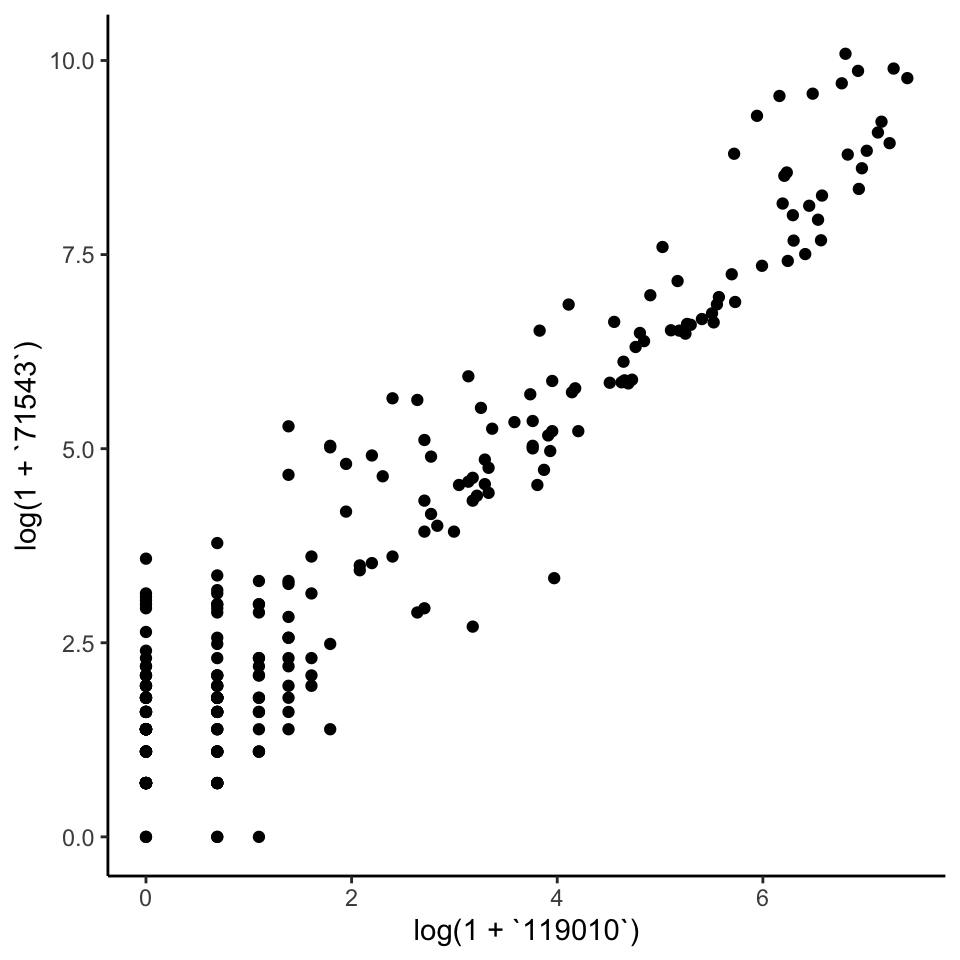

4.2 Evaluation
Let’s compare the marginal count distributions for the real and simulated data.
We’ll need the data in “long” format to be able to make the ggplot2 figure. The
pivot_experiment helper can transform the original SummarizedExperiment
objects in this way. Notice that the simulated data tends to overestimate the
number of zeros in the high-abundance taxa. To refine the simulator, we should
probably replace the zero-inflated negative binomial with ordinary negative
binomials for these poorly fitted taxa.
bind_rows(
real = pivot_experiment(amgut),
simulated = pivot_experiment(simulated),
.id = "source"
) |>
filter(feature %in% rownames(simulated)[1:20]) |>
ggplot() +
geom_histogram(
aes(log(1 + value), fill = source),
position = "identity", alpha = 0.8
) +
facet_wrap(~ reorder(feature, value), scales = "free")
Are the learned relationships with BMI plausible? We can compare scatterplots of the real and simulated data against this variable. Note that, by default, the ribbons will be evaluated along all variables, which makes for the jagged ribbons (neighboring values for BMI might have different sequencing depth, potentially leading to quite different predictions). To remove this artifact, we can assume that all samples had exactly the same sequencing depth.
new_data <- colData(amgut) |>
as_tibble() |>
mutate(sequencing_depth = 2e4)
plot(sim, "BMI", sample(sim, new_data = new_data), new_data = new_data)
We next visualize the correlation matrix estimated by the simulator’s copula model. There are a few pairs of taxa that are very highly correlated, and there are also a few taxa that seem to have higher correlation across a large number of taxa (e.g., the taxon in row 34). There is no obvious banding or block structure in this real data, though.

The pair below is one of those with high positive correlation. You can replace the selection with the commented out line to see what one of the anticorrelated pairs of taxa looks like.
# taxa <- rownames(amgut)[c(33, 43)]
taxa <- rownames(amgut)[c(14, 25)]
pivot_experiment(amgut) |>
filter(feature %in% taxa) |>
pivot_wider(names_from = feature) |>
ggplot() +
geom_point(aes(log(1 + .data[[taxa[1]]]), log(1 + .data[[taxa[2]]])))